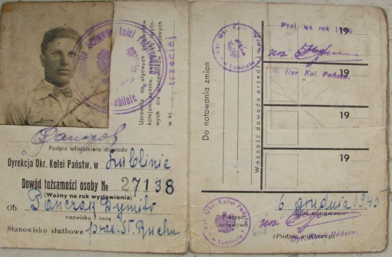
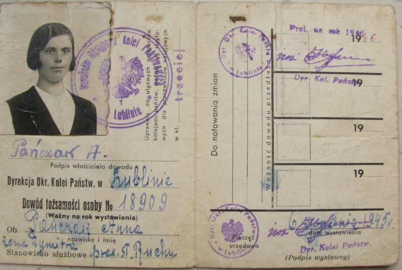
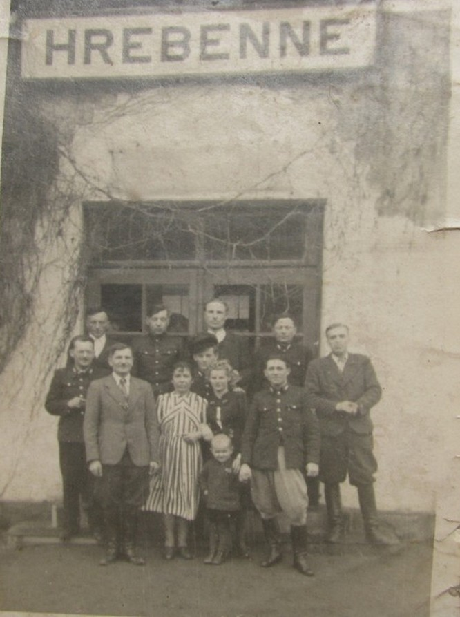
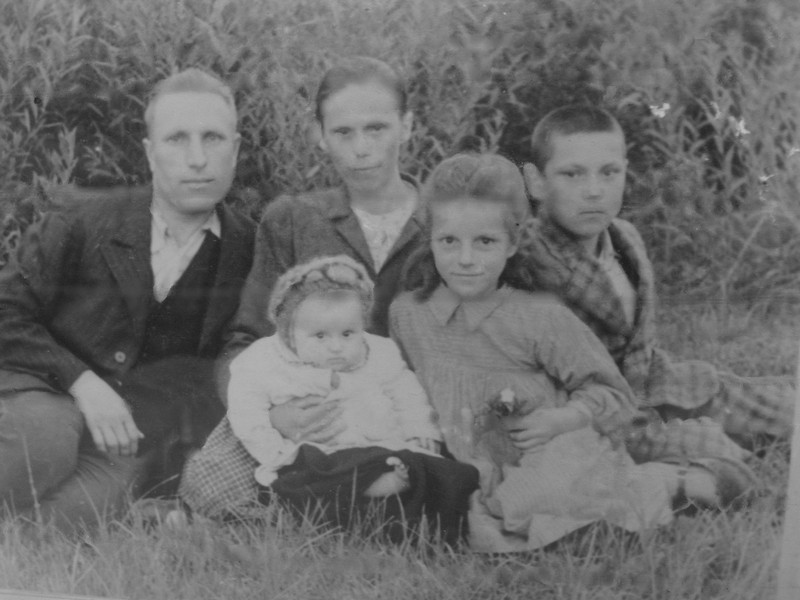
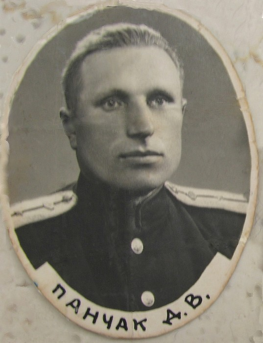
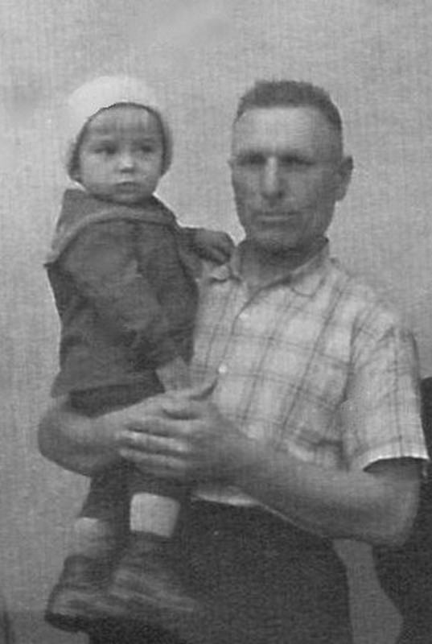
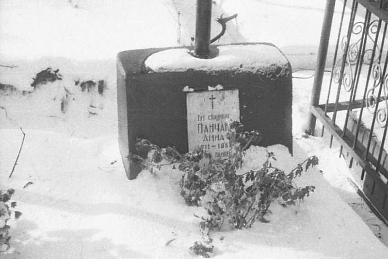
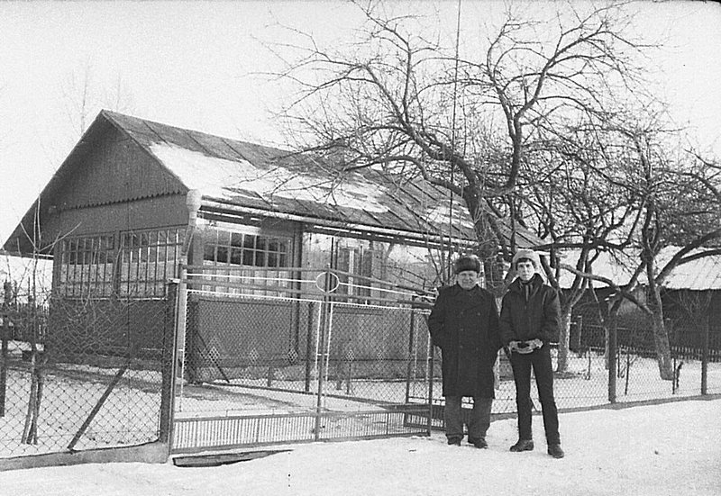
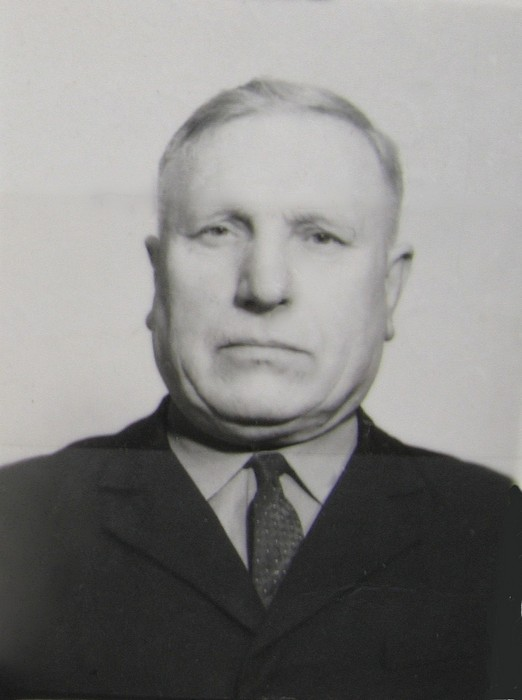

Посвящается с любовью Панчак Дмитрию
Остаётся один день до окончания 2013 года.
Если бы мой дед был жив, то в этом году ему исполнилось бы ровно 100 лет.
Но, увы, уже 30 лет его нет с нами...
В Доминикане, на удивление, дни пролетают очень быстро, солнце восходит за считанные минуты и закат длится всего 140 секунд.
Хотя, может быть, я просто старею и всё чаще думается о тех, кто не рядом с тобой, но без кого меня просто бы не было на этой земле?
К счастью, не смотря на мои перемещения по этой планете и связанных с этим разных утрат, остались фотографии близких людей. И мне хочется, чтобы они оставались в сети вечно...
Сегодня я начну с родственников по материнской линии.
Мой дедушка, мамин папа, Панчак Дмитрий Васильевич, родился в 1913 году в селе Хребенне, Томашевского уезда, Люблинского воеводства ( Польша или тогдашняя Австро-Венгерская империя).
Там же, только в 1911 году родилась и моя бабушка, мамина мама, Панчак Анна.
В 1936 году они поженились и оба работали на железной дороге.


Дедушка с коллегами по железнодорожной станции Хребенне ( самый высокий в центре).

И родились у них дети: Богдан (справа), Пелагея (моя мама, в центре) и Мария ( самая младшая).

Не знаю, какой чин занимал мой дед, но, судя по погонам на фото, это что-то офицерское.

Сохранилась фотография меня маленького с дедом.

Бабушка умерла, когда мне было несколько месяцев.

К сожалению, мне не пришлось много времени провести с ним.
Будучи уже в сознательном возрасте, мне удалось всего несколько раз приехать к нему в отпуск.

Мы много говорили на разные темы.
Дед владел немецким, польским, венгерским, украинским, русским и очень хотел видеть и меня полиглотом.
Его советы, напутствия, пожелания основали тот мой жизненный стержень, с которым я и живу.
Спасибо тебе за всё, дед!

* 1913 - † 1983